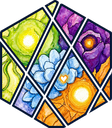

Requirements
What the artefact must do and for whom, kept as a short list the agent reads first.

PromptotypingThis page shows the shared tokens and building blocks in one place, so a site that adopts them can be compared against it. Text runs at the reading width, while cards, code and diagrams use the page width. A link inside prose stays underlined, as the design document shows.
Read the method Open the prompts
What the artefact must do and for whom, kept as a short list the agent reads first.
The source material with its provenance and the fields the interface shows.
Colours, type and interaction rules, together with the reasons behind them.
Read knowledge/INDEX.md and the documents it links.
Then state the requirement, the acceptance criteria and the open questions.